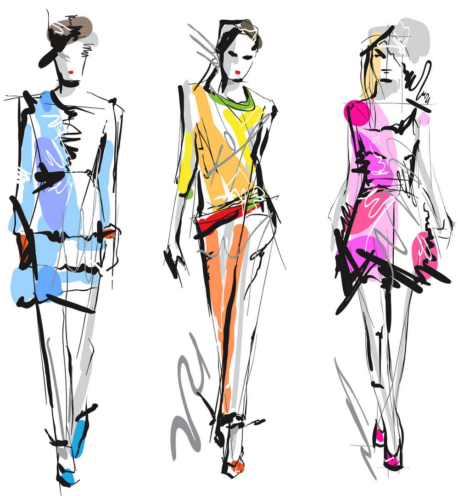

Мода и экология
Мода и экология – две темы, которые становятся все более актуальными в современном мире. С одной стороны, мода – это индустрия, которая генерирует огромные доходы и создает множество рабочих мест. С другой стороны, производство одежды и аксессуаров может наносить значительный ущерб окружающей среде.
Одна из основных проблем, связанных с модой, – это быстрое устаревание трендов и постоянное обновление гардероба. Многие люди покупают новую одежду каждый сезон, не задумываясь о том, что происходит с отброшенными вещами. Большинство из них отправляется на свалку, где занимает место на десятилетия и загрязняет почву и воду.
Кроме того, производство одежды требует большого количества энергии и ресурсов. Для выращивания хлопка используются пестициды и гербициды, которые загрязняют почву и воду. В процессе производства ткани и окрашивания используются химические вещества, которые также могут нанести вред окружающей среде.
Однако существуют способы, которые позволяют сделать моду более экологичной. Например, можно выбирать одежду из натуральных материалов, таких как органический хлопок, лен или конопля. Также можно покупать вещи из вторых рук или участвовать в программе переработки старой одежды.
Модные бренды также начинают обращать внимание на экологические проблемы и внедрять новые технологии, которые позволяют снизить вред окружающей среде. Например, некоторые компании используют переработанные материалы или экологически чистые технологии производства.
Таким образом, мода и экология – это две темы, которые могут существовать в гармонии. Каждый из нас может сделать свой вклад в сохранение окружающей среды, выбирая более экологичные варианты одежды и аксессуаров и отказываясь от быстромодных трендов.
|  |
|---|
| Экологичность |